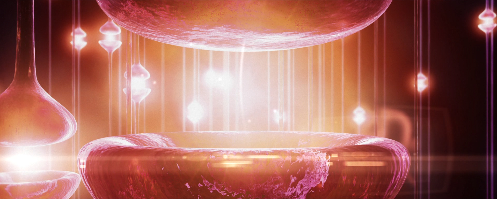

The cause of all our suffering
When people are asked what the biggest problem in their life is, most of them often state laziness, procrastination, depression or loneliness (among others). Depending from person to person, the answers may vary from a more selfish to selfless perspective.
But what is the core issue at hand? If we deeply think about it, being lazy or depressed is not the actual problem, for they are merely a symptom. It might sound paradoxical at first but it seems very likely that the core issue of all our problems (and the suffering that they cause) doesn’t rise from the problem itself, but from our obsessive need to value and chase good experiences over everything else.
You might wonder:
“How can the good experiences be the bad guy in our lives? Aren't they what makes us feel good?”
First, it is important to realize that the reason why certain people have a deep feeling of emptiness in their lives is because they have nothing to live for. And, truth be told, society has never taught us what to live for. It has just indoctrinated us with false promisesthat our life will be happy and purposeful if we keep endlessly chasing good experiences.
All we are doing is strengthening the pain in the echo chamber of our feedback loop, where suffering bounces of the walls and gets amplified over and over again until we become depressed or distressed.
{kind=link}
Valuing experience and addictions
Imagine that we break our hip and we are taken to the hospital, where for the next days we are administrated with several shots of diamorphine to ease the pain (diamorphine is a much stronger type of heroine that no addict can get on a street). Since the drug gives us a very pleasant feeling, it is fair to suppose that there is at least a chance that we would turn into an addict, right?
This has been closely studied and it just doesn’t happen: people don’t become addicts after leaving the hospital. This doesn’t mean they are immune to addiction. It simply means that the addiction to heroine is merely a symptom of a problem that begins with us craving for a better experience.

Thus, as long as we have these “good experience” kicks, we value “feeling good” more than anything else and we have nothing else to live for, we will keep reaching out to it. In essence, we are experience junkies. In the same way that someone who is after his next shot of heroine is not happy at all, we are not truly happy either with our need to chase experience all of the time.
Selfish people can be smart about it
It has been proven in scientific studies about happiness and depression that people are a lot happier when they help others. So, even if we would be the most selfish person on the world, one that only cares about himself, we would be a lot happier and fulfilled if we realized that chasing the purpose of the good experience is what is causing all our misery.
To put it more simple, even if we only care about ourselves and do everything for selfish reasons, the best thing we can do is to stop chasing the good experience and instead, understand what has been scientifically proven to result.
Having something for what to live for
When we truly emotionally realize that feelings of sadness or emptiness are only possible if we value having good experiences, we gain the ability to stop valuing it and come to an acceptance that free us from our suffering. At that point, with a clear mind, we simply do what is right at any given moment and our life gains a new purpose.
When someone becomes a father for example, even though he might still have doubts about whether he will be a good father, all the sudden he has a purpose, his self-esteem goes up and his problems are gone. He has something for what to live for.
This insight also applies in getting a girlfriend. The more we chase them, the more they are repelled. It is only when we stop caring that we become the most attractive. Similarly, in social situations, the more we care about how we come across, the less good of an impression we tend to make. It is the chase that is ruining our intents.
How can we change? The existential death approach
If there is anything that is common to every human being is how hard it is to change. Even if we are fully aware that something is better, we don't want to change. In fact, most people that are depressed or feel miserable are comfortable in being like that.
Since our whole experience emerges from our neural activity, the reason why we don't want to change has its roots at a neurological level. Neurons just perform their work day in, day out without wondering whether they are benefiting us and if, as a result, they should or should not stop sending neurochemical messages.
This simple understanding raises an intriguing question: “How do we change if, on a fundamental level, we just don’t want to?”
Think of it this way. We can easily identify cancer in a body and make the intuitive decision to get rid of it. But when it comes down to what we are, we look at ourselves as one unit and we don’t classify these non-beneficial neurons as parasites that are compromised with some cancerous indoctrinated information. We simply identify them as a part of us and that is why it is so difficult to change.

Being aware of this mechanic, however, allows us to take control. Rather than identifying with these pathways, we can realize that we are being taken advantage of, as these neurons don't care about us at all. On a certain level these neurons must die and this is what going through existential death is.
If we accept death on an existential level, we will have a much easier time to detach ourselves from our own mental construct of who we are and look at the world for what it is, simply doing what's right. We won't mind leaving our old self behind and, from that point on, there is absolutely nothing that can come at us that we are afraid of changing. We also realize that everything just comes and goes and that we were born within a bigger picture, one in which life itself occupies the central stage and we are merely here to help humanity moving forward.
Doing “death meditation” has proven to be essential to get rid of the existential fear most people carry.
{kind=link}
After accepting and letting go
You might wonder now:
“After letting go of our experience, what drives us then?”
Simply doing what we believe is right is enough. At first, it can be simple stuff like taking care of ourselves, working out, eating healthier. Giving is the ultimate way of taking. The moment we stop chasing for better experiences, we realize that giving is what makes us the most fulfilled.
Furthermore, the beauty of reason and logic is that it gives us a strong direction. Rational thinking allows us to have a bigger and bigger impact, which in return will make us feel better and better. The difference is that we won’t even care so much about the good experience that we get in return because we are giving for the right reasons and not to stimulate an attachment to the good feeling that is creating the prison we live in.